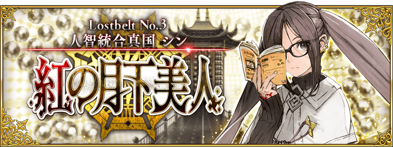

感謝您使用「Fate/Grand Order」。
在2018年11月27日(二)播送的「Fate/Grand Order 迦勒底放送局 Vol.10 紅之月下美人 配信前夕SP」，發表了有關以「Fate/Grand Order」為首的智慧型手機向FateRPG「Fate/Grand Order」為首FGO PROJECT及Fate系列的新情報。
以下介紹一部份新情報。
◆niconico生放送特別節目連動宣傳活動報酬贈送！◆
贈送「Fate/Grand Order 迦勒底放送局 Vol.10 紅之月下美人 配信前夕SP」內進行的特別節連動宣傳活動報酬！
※特別節及連動宣傳活動已結束。
向2018年11月28日(三) AM3:59前通過「特異點F 炎上汙染都市 冬木」的Master贈送聖晶石12個。

■對象期間
2018年11月28日(三) AM3:00～12月5日(三) AM2:59
■贈送內容
聖晶石 12個
■領取條件
2018年11月28日(三) AM2:59前通過「特異點F 炎上汙染都市 冬木」的Master對象
※期間內未登入的話無法領取。
※禮物只能領取1次。
※在上述時間前，在管理室(ターミナル)畫面中的關卡橫幅必須要有「CLEAR」的文字顯示。
◆niconico生放送迷你環節全問達成報酬贈送！◆
贈送「Fate/Grand Order 迦勒底放送局 Vol.10 紅之月下美人 配信前夕SP」內進行的迷你環節「Quiz！這Servant是誰！？」的全問達成報酬！
向2018年11月28日(三) AM3:59前通過「特異點F 炎上汙染都市 冬木」的Master贈送魔力稜鏡60個。
■對象期間
2018年11月28日(三) AM3:00～12月5日(三) AM2:59
■贈送內容
魔力稜鏡 60個
■領取條件
2018年11月28日(三) AM2:59前通過「特異點F 炎上汙染都市 冬木」的Master對象
※期間內未登入的話無法領取。
※禮物只能領取1次。
※在上述時間前，在管理室(ターミナル)畫面中的關卡橫幅必須要有「CLEAR」的文字顯示。

◆主線關卡第2部 第3章「Lostbelt No.3 人智統合真國 SIN 紅之月下美人」的開幕發表◆
做為「Fate/Grand Order」第2部「Fate/Grand Order -Cosmos in the Lostbelt-」第3章的「Lostbelt No.3 人智統合真國 SIN 紅之月下美人」自2018年11月27日(二) 21:00開幕。
舞台是B.C.0210?的中國―――
自橫斷天空的長城與廣佈廣大麥田的大地開始新的故事。
由劇本撰寫・虚淵玄(Nitroplus)贈予的「第2部 第3章」，請盡情享受第3個異聞帯舞台！
■公開時間
2018年11月27日(二) 21:00～
詳細情請在此處的公告確認。
其他線下活動及週邊請參考原公告。
今後也請多多指教「Fate/Grand Order」。